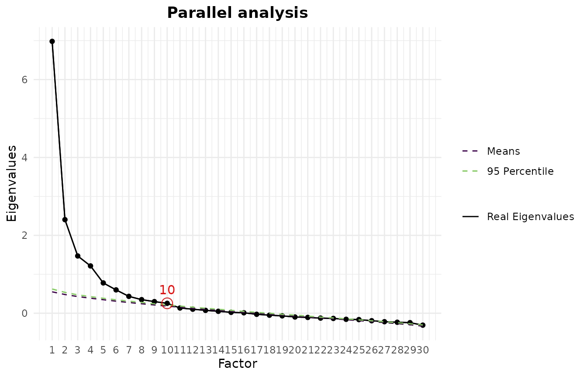
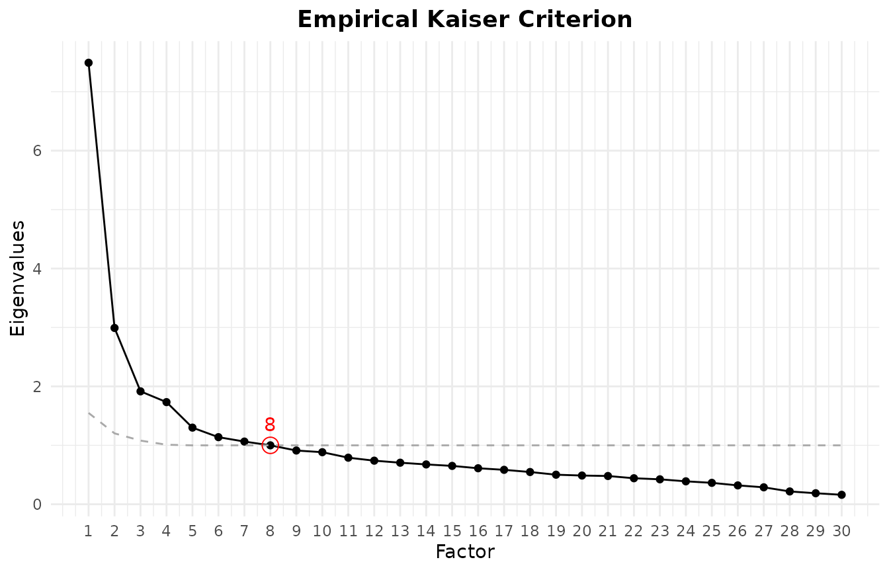
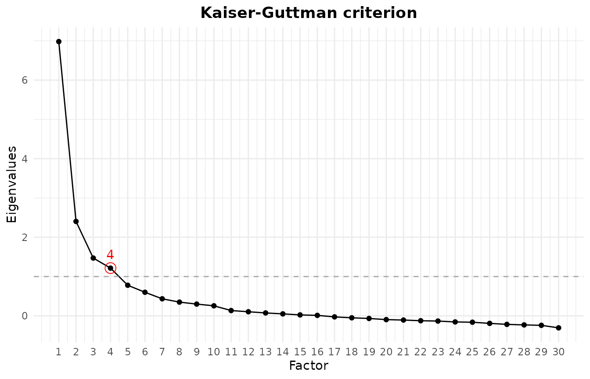
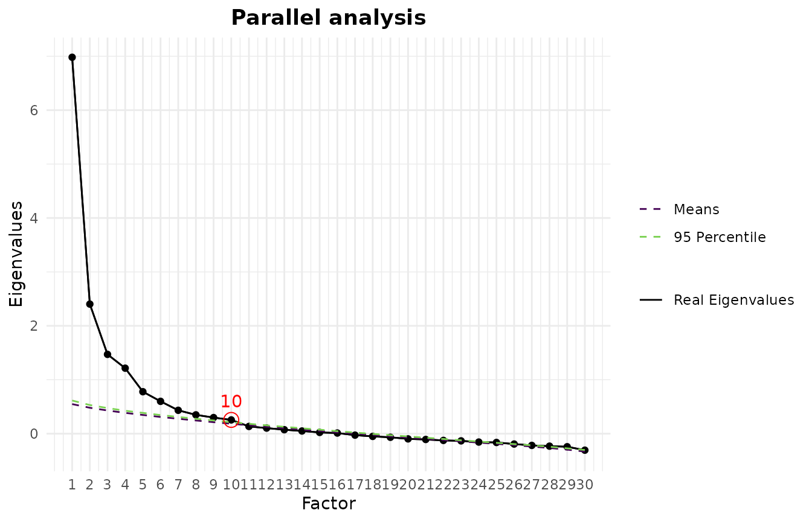

EFAtools provides a complete workflow for exploratory
factor analysis (EFA). Starting from raw data or a correlation matrix,
it takes you through every stage of a typical analysis:
-
Screening the data for factorability,
multicollinearity, non-normality, and outliers
(
efa_screen(), withefa_bartlett()andefa_kmo()for the individual measures). -
Retention: deciding how many factors to keep, with
a comprehensive suite of factor retention criteria
(
efa_retain()and the individual criteria it wraps). -
Extraction and rotation of the factor solution
(
efa_fit()), with a choice of estimators and orthogonal or oblique rotations. -
Post-processing: comparing solutions
(
efa_compare()), averaging across analytic choices (efa_average()), estimating factor scores (efa_scores()), a Schmid-Leiman transformation (efa_schmid_leiman()), and reliability coefficients including McDonald’s omegas (efa_reliability()).
The computationally intensive routines are implemented in C++ for speed. This vignette walks through the whole workflow on a single data set; it is an overview rather than a tutorial on the methods themselves, so please consult the individual help pages for the statistical details and literature references.
The package can be installed from CRAN using
install.packages("EFAtools"), or from GitHub using
pak::pak("mdsteiner/EFAtools"), and then loaded using:
We use the DOSPERT_raw data set throughout, which
contains responses of 3123 participants to the Domain Specific Risk
Taking Scale (DOSPERT); see ?DOSPERT_raw for details. The
data are rather large, so, purely to keep this vignette quick to build,
we work with the first 500 observations. In a real analysis you would of
course use the full data set.
# only use a subset to make analyses faster
DOSPERT_sub <- DOSPERT_raw[1:500, ]Screening the Data
Before extracting factors it is worth checking whether the data are
suitable for factor analysis, and whether they satisfy the assumptions
of the estimator you plan to use. efa_screen() collects the
relevant diagnostics in one place. From raw data it reports the
Kaiser-Meyer-Olkin (KMO) measure of sampling adequacy (overall and per
variable), Bartlett’s test of sphericity, the determinant and condition
number of the correlation matrix, the squared multiple correlation (SMC)
and per-variable diagnostics for each item, tests of multivariate
normality (Mardia and Henze-Zirkler), and multivariate outliers, and it
closes with a set of recommendations.
efa_screen(DOSPERT_sub, seed = 2)
#>
#> ── Sampling adequacy and sphericity ────────────────────────────────────────────
#>
#> ✔ The overall KMO value for your data is meritorious (Overall KMO = 0.87).
#> These data are probably suitable for factor analysis.
#>
#> ✔ The Bartlett's test of sphericity was significant at an alpha level of .05.
#> These data are probably suitable for factor analysis.
#> χ²(435) = 5843.05, p < .001
#>
#> ── Multicollinearity ───────────────────────────────────────────────────────────
#>
#> ✖ Determinant: 0.00000634. Multicollinearity likely (a value near 0 signals
#> it).
#> ✔ Condition number: 46.561 (condition index 6.824). No concern (index below 10;
#> Belsley, Kuh & Welsch, 1980).
#>
#> ── Per-variable diagnostics ────────────────────────────────────────────────────
#>
#> variance missing% SMC MSA flags
#> ethR_1 2.785 0 0.428 0.908
#> ethR_2 2.469 0 0.312 0.927
#> ethR_3 1.274 0 0.444 0.906 sparse
#> ethR_4 2.011 0 0.317 0.818 sparse
#> ethR_5 2.202 0 0.310 0.926
#> ethR_6 3.457 0 0.398 0.837
#> finR_1 1.962 0 0.683 0.880
#> finR_2 3.223 0 0.319 0.816
#> finR_3 2.356 0 0.716 0.853
#> finR_4 2.874 0 0.519 0.857
#> finR_5 2.458 0 0.760 0.853
#> finR_6 3.118 0 0.515 0.861
#> heaR_1 4.016 0 0.296 0.912
#> heaR_2 4.532 0 0.277 0.898
#> heaR_3 2.888 0 0.366 0.892
#> heaR_4 2.185 0 0.423 0.889
#> heaR_5 4.099 0 0.254 0.882
#> heaR_6 3.356 0 0.313 0.935
#> recR_1 4.570 0 0.374 0.888
#> recR_2 2.829 0 0.465 0.927
#> recR_3 3.664 0 0.511 0.905
#> recR_4 4.362 0 0.687 0.849
#> recR_5 3.741 0 0.685 0.840
#> recR_6 4.076 0 0.541 0.920
#> socR_1 1.237 0 0.351 0.714 sparse
#> socR_2 2.774 0 0.434 0.784
#> socR_3 2.148 0 0.343 0.735
#> socR_4 2.751 0 0.359 0.791
#> socR_5 3.562 0 0.284 0.840
#> socR_6 2.529 0 0.379 0.786
#>
#> ── Multivariate normality ──────────────────────────────────────────────────────
#>
#> ✖ Mardia's skewness: χ²(4960) = 11585.82, p < .001.
#> ✖ Mardia's kurtosis: z = 43.84, p < .001.
#> ✖ Henze-Zirkler: HZ = 1.03, p < .001.
#> These data depart from multivariate normality.
#>
#> ── Outliers ────────────────────────────────────────────────────────────────────
#>
#> ℹ 240 of 500 observations were flagged as multivariate outliers (robust
#> distance > 6.85).
#>
#> ── Recommendations ─────────────────────────────────────────────────────────────
#>
#> ! These data depart from multivariate normality; normal-theory standard errors
#> and fit statistics may be biased - prefer robust (sandwich) or bootstrapped
#> standard errors.
#> ! Bartlett's test is significant, but it assumes multivariate normality and
#> grows more sensitive as N increases; because these data are non-normal, treat
#> it as uninformative here and rely on the KMO.
#> ! A near-zero determinant or high condition number indicates multicollinearity;
#> look for redundant or linearly dependent items (r > .8) and consider removing
#> them.
#> ! 3 variables have a sparse response category (< 5 responses): ethR_3, ethR_4,
#> and socR_1; a low-frequency category can destabilise polychoric estimates -
#> consider collapsing it into an adjacent category.
#> ! 240 of 500 observations (48%) exceed the outlier cutoff, far above the 2.5%
#> expected under multivariate normality; this usually means the data are not
#> elliptically distributed (subgroups or a mixture) rather than that this many
#> cases are contaminated.The overall KMO is meritorious and Bartlett’s test is clearly significant, so the data are factorable. The near-zero determinant flags some multicollinearity, which is expected for a scale with strongly related items within each risk domain. More interesting are the last few sections: three items have a sparse response category, and both the Mardia and the Henze-Zirkler tests reject multivariate normality. A consequence is that normal-theory standard errors and fit indices may be biased, so robust (sandwich) or bootstrapped standard errors are preferable, and Bartlett’s test should be read with caution. For a fully ordinal treatment you would move to polychoric correlations with a categorical least-squares estimator.
On the outlier section: The robust distances come from a minimum
covariance determinant (MCD) estimate, whose random subset search is the
reason efa_screen() takes a seed. The MCD
assumes roughly elliptical data, and on markedly non-normal data like
these, large robust distances are common. This is why almost half of the
observations end up flagged (On such heavily discretised data the most
robust 50% subset can also turn out singular, in which case
efa_screen() falls back to classical Mahalanobis distances
and labels the output accordingly). The flagged cases are therefore
better understood as evidence of that non-normality than as genuine
outliers to remove. Inspect them (via $outliers$flagged)
rather than deleting them automatically.
If you only want the two classic factorability tests, they are also available on their own. Bartlett’s test of sphericity checks whether the correlation matrix differs from an identity matrix (it should be significant), and the KMO criterion summarises how strongly each variable is predicted by the others:
# Bartlett's test of sphericity
efa_bartlett(DOSPERT_sub)
#>
#> ✔ The Bartlett's test of sphericity was significant at an alpha level of .05.
#> These data are probably suitable for factor analysis.
#>
#> χ²(435) = 5843.05, p < .001
# KMO criterion
efa_kmo(DOSPERT_sub)
#>
#> ── Kaiser-Meyer-Olkin criterion (KMO) ──────────────────────────────────────────
#>
#> ✔ The overall KMO value for your data is meritorious.
#> These data are probably suitable for factor analysis.
#>
#> Overall: 0.87
#>
#> For each variable:
#> ethR_1 ethR_2 ethR_3 ethR_4 ethR_5 ethR_6 finR_1 finR_2 finR_3 finR_4 finR_5
#> 0.908 0.927 0.906 0.818 0.926 0.837 0.880 0.816 0.853 0.857 0.853
#> finR_6 heaR_1 heaR_2 heaR_3 heaR_4 heaR_5 heaR_6 recR_1 recR_2 recR_3 recR_4
#> 0.861 0.912 0.898 0.892 0.889 0.882 0.935 0.888 0.927 0.905 0.849
#> recR_5 recR_6 socR_1 socR_2 socR_3 socR_4 socR_5 socR_6
#> 0.840 0.920 0.714 0.784 0.735 0.791 0.840 0.786Both tests can also be requested directly inside
efa_retain(), alongside the factor retention criteria
discussed next.
Deciding How Many Factors to Retain
One of the most consequential decisions in an EFA is how many factors to extract. There is a large number of factor retention criteria, and no single one dominates the others: which criterion works best depends on the structure of the data — how many indicators there are, how strong the factors are, and how strongly they intercorrelate. The current recommendation is therefore to examine several criteria together and check whether they converge (see, for example, Auerswald and Moshagen, 2019).
EFAtools implements a broad set of these criteria. They
can be called individually, or all (or a selection) of them together
through efa_retain().
Calling Individual Criteria
Each criterion has its own function. For a parallel analysis based on squared multiple correlations (SMC; also called parallel analysis with principal factors), for example, you would run:
# parallel analysis based on SMC eigenvalues
pa <- efa_parallel(DOSPERT_sub, eigen_type = "smc")
pa
#> ── Parallel analysis ───────────────────────────────────────────────────────────
#> Eigenvalues found using SMC; 1000 simulated datasets.
#>
#> • SMC eigenvalues: 10
#>
#> ℹ Number of factors retained using the "means" decision rule.Printing the result reports the suggested number of factors. Each
criterion also has a plot() method that draws the figure
behind the decision — for a parallel analysis, the observed eigenvalues
against the reference eigenvalues from the simulated data:
plot(pa)
Other criteria work the same way. The empirical Kaiser criterion, for instance:
# empirical Kaiser criterion
efa_ekc(DOSPERT_sub)
#> ── Empirical Kaiser Criterion ──────────────────────────────────────────────────
#>
#> • Original implementation (Braeken & van Assen, 2017): 8
#>
#> ℹ Multiple implementations of EKC exist; make sure to report which one you used
#> (see the efa_ekc help page for details).The following criteria are currently implemented: comparison data
(efa_cd()), the empirical Kaiser criterion
(efa_ekc()), the hull method (efa_hull()), the
Kaiser-Guttman criterion (efa_kgc()), the minimum average
partial test (efa_map()), the next eigenvalue sufficiency
test (efa_nest()), parallel analysis
(efa_parallel()), the scree test
(efa_scree()), and sequential model tests
(efa_smt()). Many of them offer several variants of the
underlying method. For instance, parallel analysis, can be based on
eigenvalues from unity (principal components), SMCs, or a full EFA. See
the individual help pages for the options.
Running Several Criteria at Once with efa_retain()
To compare criteria, it is easier to call efa_retain(),
a wrapper around the implemented retention criteria that also runs
Bartlett’s test and computes the KMO. You can pick a subset with the
criteria argument:
ret <- efa_retain(DOSPERT_sub,
criteria = c("parallel", "ekc", "kgc", "smt", "map"))
#> Warning: The sequential model tests selected an inadmissible solution: chi: 13 factors
#> (Heywood case) and AIC: 13 factors (Heywood case).
#> ℹ The selected solution has a Heywood case or did not converge, so the
#> suggested number of factors may be unreliable; interpret it with caution and
#> cross-check with other criteria.
ret
#> ── Tests for the suitability of the data for factor analysis ───────────────────
#>
#> ✔ The Bartlett's test of sphericity was significant at an alpha level of .05:
#> χ²(435) = 5843.05, p < .001. These data are probably suitable for factor
#> analysis.
#> ✔ The Kaiser-Meyer-Olkin criterion is meritorious (KMO = 0.87). These data are
#> probably suitable for factor analysis.
#>
#> ── Suggested number of factors ─────────────────────────────────────────────────
#>
#> 8 suggestions from 5 criteria, ranging from 4 to 13 factors.
#>
#> Empirical Kaiser Criterion
#> • Original implementation (Braeken & van Assen, 2017): 8
#>
#> Kaiser-Guttman criterion
#> • SMC eigenvalues: 4
#>
#> Minimum average partial
#> • Original implementation (TR2): 6
#> • Revised implementation (TR4): 6
#>
#> Parallel analysis
#> • SMC eigenvalues: 10
#>
#> Sequential model tests
#> • Sequential chi-square model tests: 13
#> • Lower bound of RMSEA 90% CI: 6
#> • Akaike Information Criterion: 13The printed summary is text only, so the scree test’s suggestion to
inspect the plot needs an explicit call. plot() on the
result draws the figure for every criterion that has one:
plot(ret)
#> $EKC
#>
#> $KGC
#>
#> $PARALLEL
Omitting criteria runs the full suite, including the
hull method, the next eigenvalue sufficiency test, and comparison data;
the latter is computationally expensive and can be slow on larger data
sets, which is why we leave it out here.
This is the situation one would rather avoid, but it does happen: the criteria disagree, with suggestions ranging from four to well above ten factors. When there is no clear convergence, the choice becomes partly a matter of judgement. We proceed with six factors, consistent with the minimum average partial test and the RMSEA-based sequential model test above (note that this DOSPERT version assumes 5 factors, 6 factors splits the financial risk items into two factors).
All criteria except comparison data (which needs raw data) can also be applied to a correlation matrix, in which case the sample size must be supplied. On a cleaner data set the criteria often agree:
efa_retain(test_models$baseline$cormat, N = 500, estimator = "uls",
criteria = c("parallel", "ekc", "smt"),
eigen_type_other = c("smc", "pca"))
#> ── Tests for the suitability of the data for factor analysis ───────────────────
#>
#> ✔ The Bartlett's test of sphericity was significant at an alpha level of .05:
#> χ²(153) = 2173.28, p < .001. These data are probably suitable for factor
#> analysis.
#> ✔ The Kaiser-Meyer-Olkin criterion is marvellous (KMO = 0.916). These data are
#> probably suitable for factor analysis.
#>
#> ── Suggested number of factors ─────────────────────────────────────────────────
#>
#> 6 suggestions from 3 criteria, ranging from 2 to 3 factors (most common: 3).
#>
#> Empirical Kaiser Criterion
#> • Original implementation (Braeken & van Assen, 2017): 3
#>
#> Parallel analysis
#> • PCA eigenvalues: 3
#> • SMC eigenvalues: 3
#>
#> Sequential model tests
#> • Sequential chi-square model tests: 3
#> • Lower bound of RMSEA 90% CI: 2
#> • Akaike Information Criterion: 3Here the criteria agree on three factors, with only the conservative RMSEA lower-bound variant of the sequential model test suggesting two.
Extracting Factors with efa_fit()
efa_fit() performs the factor extraction and rotation.
For extraction you can choose principal axis factoring (PAF), maximum
likelihood (ML), or unweighted least squares (ULS, also known as
MINRES); diagonally weighted least squares (DWLS) is additionally
available for ordinal data analysed with polychoric or tetrachoric
correlations (see the EFA with
ordinal and missing data vignette). For rotation the package offers
varimax and promax as well as a range of further orthogonal and oblique
rotations (e.g., quartimax, equamax, oblimin, quartimin, geomin,
bentler, bifactor, and simplimax), all computed by rotation engines
built into the package.
An EFA with PAF and no rotation is as simple as:
efa_fit(DOSPERT_sub, n_factors = 6)
#>
#> EFA performed with estimator = 'PAF' and rotation = 'none'.
#>
#> ── Unrotated Loadings ──────────────────────────────────────────────────────────
#>
#> F1 F2 F3 F4 F5 F6 h2 u2
#> ethR_1 .558 -.193 .141 .232 -.129 .049 .442 .558
#> ethR_2 .472 -.157 .073 .242 .037 .059 .316 .684
#> ethR_3 .507 -.402 .164 .112 -.087 .062 .470 .530
#> ethR_4 .308 -.278 .189 .294 -.103 .224 .356 .644
#> ethR_5 .459 -.173 .202 .042 -.082 .045 .292 .708
#> ethR_6 .412 -.308 .230 .201 -.066 .207 .405 .595
#> finR_1 .602 -.304 -.461 -.045 .244 .028 .730 .270
#> finR_2 .294 .281 -.255 -.066 -.341 .086 .359 .641
#> finR_3 .626 -.285 -.471 -.031 .264 .114 .778 .222
#> finR_4 .557 -.012 -.357 -.023 -.437 -.063 .633 .367
#> finR_5 .657 -.342 -.491 -.064 .218 .028 .842 .158
#> finR_6 .551 .157 -.341 -.007 -.429 -.082 .635 .365
#> heaR_1 .464 -.079 .047 .133 .010 .046 .244 .756
#> heaR_2 .409 -.020 .163 .229 .040 .068 .252 .748
#> heaR_3 .497 -.101 .172 .127 .007 -.325 .409 .591
#> heaR_4 .547 -.110 .183 .038 .070 -.322 .455 .545
#> heaR_5 .382 .002 .175 .250 .028 .010 .240 .760
#> heaR_6 .504 .063 .102 .015 .006 -.196 .307 .693
#> recR_1 .443 .337 .057 -.064 .007 -.063 .322 .678
#> recR_2 .617 -.012 .147 -.141 .126 -.232 .493 .507
#> recR_3 .612 .178 .103 -.247 .080 -.153 .507 .493
#> recR_4 .634 .228 .254 -.447 .033 .235 .774 .226
#> recR_5 .640 .135 .267 -.463 .051 .261 .784 .216
#> recR_6 .629 .238 .135 -.244 -.060 -.014 .534 .466
#> socR_1 .075 .528 -.024 .233 .213 .124 .400 .600
#> socR_2 .358 .428 -.083 .247 .147 .013 .401 .599
#> socR_3 .118 .528 -.160 .122 .044 .116 .348 .652
#> socR_4 .235 .481 -.057 .214 .166 -.093 .372 .628
#> socR_5 .317 .330 .014 .154 -.030 .002 .234 .766
#> socR_6 .260 .462 -.058 .267 -.023 .082 .363 .637
#>
#> Legend:
#> bold = |loading| >= .300
#> grey = below cutoff
#> red h2/u2 = Heywood-relevant value
#>
#> ── Variances Accounted for ─────────────────────────────────────────────────────
#>
#> F1 F2 F3 F4 F5 F6
#> SS loadings 7.013 2.417 1.529 1.246 .850 .641
#> Prop Tot Var .234 .081 .051 .042 .028 .021
#> Cum Prop Tot Var .234 .314 .365 .407 .435 .457
#> Prop Comm Var .512 .177 .112 .091 .062 .047
#> Cum Prop Comm Var .512 .689 .800 .891 .953 1.000
#>
#> ── Model Fit ───────────────────────────────────────────────────────────────────
#>
#> CAF: .48
#> SRMR: .03
#> df: 270To rotate the loadings, set the rotation argument. Here
we use a promax rotation. We assign the result, as later sections reuse
this solution:
efa_dospert <- efa_fit(DOSPERT_sub, n_factors = 6, rotation = "promax")
efa_dospert
#>
#> EFA performed with estimator = 'PAF' and rotation = 'promax'.
#>
#> ── Rotated Loadings ────────────────────────────────────────────────────────────
#>
#> F1 F2 F3 F4 F5 F6 h2 u2
#> ethR_1 .547 -.025 -.020 .130 .009 .122 .442 .558
#> ethR_2 .447 -.055 .132 .098 .115 -.043 .316 .684
#> ethR_3 .532 .045 .068 .117 -.212 .030 .470 .530
#> ethR_4 .695 -.035 -.039 -.162 .000 -.002 .356 .644
#> ethR_5 .382 .159 -.051 .130 -.100 .036 .292 .708
#> ethR_6 .664 .086 -.003 -.089 -.063 -.044 .405 .595
#> finR_1 -.015 -.019 .853 .022 .003 .008 .730 .270
#> finR_2 -.050 .121 -.044 -.211 .120 .599 .359 .641
#> finR_3 .046 .035 .895 -.094 .061 -.011 .778 .222
#> finR_4 .039 -.071 .098 .035 -.102 .768 .633 .367
#> finR_5 -.006 -.010 .887 .023 -.038 .057 .842 .158
#> finR_6 -.022 -.051 .023 .061 .031 .774 .635 .365
#> heaR_1 .318 .042 .111 .091 .092 .019 .244 .756
#> heaR_2 .416 .020 -.003 .093 .191 -.081 .252 .748
#> heaR_3 .133 -.140 -.071 .674 -.036 -.009 .409 .591
#> heaR_4 .074 -.031 -.006 .697 -.067 -.074 .455 .545
#> heaR_5 .385 -.037 -.053 .170 .197 -.072 .240 .760
#> heaR_6 .044 .062 -.026 .455 .059 .048 .307 .693
#> recR_1 -.067 .253 -.060 .219 .247 .094 .322 .678
#> recR_2 -.046 .231 .089 .574 -.046 -.090 .493 .507
#> recR_3 -.155 .402 .053 .423 .035 .011 .507 .493
#> recR_4 .042 .926 -.010 -.089 .002 -.017 .774 .226
#> recR_5 .088 .945 .034 -.114 -.065 -.058 .784 .216
#> recR_6 -.020 .510 -.067 .212 .053 .154 .534 .466
#> socR_1 .016 .029 .025 -.137 .679 -.162 .400 .600
#> socR_2 .057 -.035 .103 .072 .602 -.020 .401 .599
#> socR_3 -.084 .061 .029 -.199 .559 .110 .348 .652
#> socR_4 -.090 -.082 .023 .197 .583 -.057 .372 .628
#> socR_5 .097 .032 -.086 .077 .370 .117 .234 .766
#> socR_6 .134 -.035 -.072 -.079 .568 .142 .363 .637
#>
#> Legend:
#> bold = |loading| >= .300
#> grey = below cutoff
#> red h2/u2 = Heywood-relevant value
#>
#> ── Factor Intercorrelations ────────────────────────────────────────────────────
#>
#> F1 F2 F3 F4 F5 F6
#> F1 1.000
#> F2 .357 1.000
#> F3 .455 .349 1.000
#> F4 .567 .594 .502 1.000
#> F5 .031 .316 .046 .287 1.000
#> F6 .329 .441 .463 .486 .324 1.000
#>
#> ── Variances Accounted for ─────────────────────────────────────────────────────
#>
#> F1 F2 F3 F4 F5 F6
#> SS loadings 2.565 2.518 2.457 2.225 2.213 1.717
#> Prop Tot Var .086 .084 .082 .074 .074 .057
#> Cum Prop Tot Var .086 .169 .251 .326 .399 .457
#> Prop Comm Var .187 .184 .179 .162 .162 .125
#> Cum Prop Comm Var .187 .371 .551 .713 .875 1.000
#>
#> ── Model Fit ───────────────────────────────────────────────────────────────────
#>
#> CAF: .48
#> SRMR: .03
#> df: 270We can also use a different estimator and rotation, here for example ULS and an oblimin rotation:
efa_uls <- efa_fit(DOSPERT_sub, n_factors = 6, rotation = "oblimin", estimator = "uls")
efa_uls
#>
#> EFA performed with estimator = 'ULS' and rotation = 'oblimin'.
#>
#> ── Rotated Loadings ────────────────────────────────────────────────────────────
#>
#> F1 F2 F3 F4 F5 F6 h2 u2
#> ethR_1 .039 .009 .522 -.007 .137 .146 .441 .559
#> ethR_2 .166 -.025 .419 .100 .097 -.008 .316 .684
#> ethR_3 .120 .064 .511 -.220 .115 .052 .470 .530
#> ethR_4 -.013 -.038 .644 -.031 -.104 .008 .356 .644
#> ethR_5 -.003 .177 .371 -.103 .126 .059 .292 .708
#> ethR_6 .029 .084 .620 -.086 -.048 -.025 .405 .595
#> finR_1 .850 -.013 -.012 .003 .004 .028 .729 .271
#> finR_2 -.022 .102 -.039 .106 -.137 .551 .358 .642
#> finR_3 .883 .028 .039 .054 -.088 .007 .778 .222
#> finR_4 .160 -.054 .063 -.109 .068 .725 .634 .366
#> finR_5 .890 -.005 -.002 -.037 .006 .073 .842 .158
#> finR_6 .085 -.028 .005 .023 .092 .737 .636 .364
#> heaR_1 .144 .064 .302 .083 .091 .046 .244 .756
#> heaR_2 .029 .047 .389 .176 .095 -.043 .252 .748
#> heaR_3 .011 -.044 .154 -.016 .558 .051 .409 .591
#> heaR_4 .073 .060 .101 -.041 .571 -.008 .455 .545
#> heaR_5 -.016 .002 .362 .185 .158 -.031 .240 .760
#> heaR_6 .035 .123 .064 .074 .382 .092 .307 .693
#> recR_1 -.024 .282 -.050 .254 .193 .122 .322 .678
#> recR_2 .153 .295 -.014 -.016 .467 -.028 .493 .507
#> recR_3 .105 .441 -.118 .062 .348 .056 .507 .493
#> recR_4 .010 .881 .053 .014 -.060 .001 .774 .226
#> recR_5 .052 .897 .095 -.053 -.084 -.039 .786 .214
#> recR_6 -.016 .524 .004 .068 .191 .178 .534 .466
#> socR_1 -.004 .033 -.010 .656 -.104 -.134 .400 .600
#> socR_2 .109 .000 .043 .585 .074 .018 .401 .599
#> socR_3 .009 .054 -.095 .539 -.147 .110 .348 .652
#> socR_4 .031 -.034 -.091 .576 .169 -.015 .372 .628
#> socR_5 -.061 .059 .091 .359 .086 .137 .234 .766
#> socR_6 -.064 -.017 .114 .542 -.036 .155 .363 .637
#>
#> Legend:
#> bold = |loading| >= .300
#> grey = below cutoff
#> red h2/u2 = Heywood-relevant value
#>
#> ── Factor Intercorrelations ────────────────────────────────────────────────────
#>
#> F1 F2 F3 F4 F5 F6
#> F1 1.000
#> F2 .303 1.000
#> F3 .379 .272 1.000
#> F4 .017 .245 .030 1.000
#> F5 .367 .412 .436 .173 1.000
#> F6 .353 .353 .186 .282 .238 1.000
#>
#> ── Variances Accounted for ─────────────────────────────────────────────────────
#>
#> F1 F2 F3 F4 F5 F6
#> SS loadings 2.749 2.655 2.465 2.162 1.869 1.797
#> Prop Tot Var .092 .088 .082 .072 .062 .060
#> Cum Prop Tot Var .092 .180 .262 .334 .397 .457
#> Prop Comm Var .201 .194 .180 .158 .136 .131
#> Cum Prop Comm Var .201 .395 .574 .732 .869 1.000
#>
#> ── Model Fit ───────────────────────────────────────────────────────────────────
#>
#> χ²(270) = 618.06, p < .001
#> CFI: .93
#> TLI: .89
#> RMSEA [90% CI]: .05 [.05; .06]
#> AIC: 78.06
#> BIC: -1059.88
#> ECVI: 2.02
#> CAF: .48
#> SRMR: .03Comparing Solutions with efa_compare()
efa_compare() provides a quick way to see how similar
two loading (pattern) matrices are — whether they come from different
implementations, different estimators, or different rotations. For
instance, to compare the PAF/promax solution with the ULS/oblimin
one:
efa_compare(efa_dospert$rot_loadings, efa_uls$rot_loadings,
x_labels = c("PAF and promax", "ULS and oblimin"))
#>
#> ── Summary statistics ──────────────────────────────────────────────────────────
#>
#> Mean [min, max] absolute difference: .0278 [ .0001, .1262]
#> Median absolute difference: .0226
#> Root mean squared distance (RMSE): .0359
#> Max decimals where all numbers agree in absolute value: 0
#> Differing indicator-to-factor correspondences: 1 (highest loading), 0 (all |loadings| >= 0.3)
#>
#> ── Elementwise differences ─────────────────────────────────────────────────────
#>
#> F1 F2 F3 F4 F5 F6
#> ethR_1 .0244 -.0335 -.0590 -.0073 .0157 -.0248
#> ethR_2 .0274 -.0299 -.0345 .0006 .0153 -.0348
#> ethR_3 .0208 -.0194 -.0522 .0025 .0073 -.0224
#> ethR_4 .0509 .0033 -.0253 -.0578 .0306 -.0099
#> ethR_5 .0110 -.0174 -.0482 .0045 .0028 -.0227
#> ethR_6 .0434 .0018 -.0325 -.0408 .0224 -.0190
#> finR_1 -.0027 -.0061 .0021 .0175 -.0001 -.0201
#> finR_2 -.0116 .0192 -.0214 -.0742 .0142 .0478
#> finR_3 .0072 .0077 .0114 -.0060 .0069 -.0179
#> finR_4 -.0240 -.0170 -.0625 -.0334 .0071 .0427
#> finR_5 -.0046 -.0054 -.0032 .0162 -.0006 -.0168
#> finR_6 -.0267 -.0230 -.0624 -.0316 .0075 .0378
#> heaR_1 .0156 -.0223 -.0331 .0003 .0095 -.0269
#> heaR_2 .0272 -.0276 -.0316 -.0019 .0148 -.0376
#> heaR_3 -.0213 -.0955 -.0820 .1154 -.0202 -.0595
#> heaR_4 -.0269 -.0912 -.0791 .1262 -.0266 -.0660
#> heaR_5 .0226 -.0393 -.0376 .0123 .0119 -.0404
#> heaR_6 -.0202 -.0618 -.0610 .0728 -.0150 -.0437
#> recR_1 -.0171 -.0288 -.0354 .0253 -.0074 -.0280
#> recR_2 -.0327 -.0634 -.0637 .1076 -.0301 -.0612
#> recR_3 -.0370 -.0393 -.0520 .0750 -.0277 -.0450
#> recR_4 -.0107 .0446 -.0201 -.0293 -.0118 -.0187
#> recR_5 -.0075 .0487 -.0177 -.0300 -.0117 -.0186
#> recR_6 -.0249 -.0134 -.0510 .0203 -.0149 -.0238
#> socR_1 .0259 -.0045 .0287 -.0333 .0225 -.0286
#> socR_2 .0137 -.0351 -.0068 -.0020 .0166 -.0377
#> socR_3 .0111 .0072 .0203 -.0524 .0206 .0005
#> socR_4 .0005 -.0483 -.0079 .0283 .0065 -.0417
#> socR_5 .0058 -.0272 -.0242 -.0084 .0114 -.0191
#> socR_6 .0199 -.0179 -.0076 -.0427 .0257 -.0124Averaging Across Analytic Choices with
efa_average()
Comparing two solutions by hand answers the question for those two.
efa_average() asks it across a whole grid at once: it runs
an EFA for every combination of the settings you allow it to vary,
averages the loadings across the solutions that converged, and reports
the range each loading spans. That range is the useful part — it shows
how much of the result is the data and how much is the analytic choice.
Here we vary only the estimator, keeping one implementation each of PAF,
ULS, and ML with a promax rotation:
avg_dospert <- efa_average(DOSPERT_sub, n_factors = 6,
estimator = c("paf", "uls", "ml"),
type = "EFAtools", start_method = "psych")
avg_dospert
#>
#> Averaging performed with averaging method mean (trim = 0) across 3 EFAs,
#> varying the following settings: estimator.
#>
#> The error rate is at 0%. Of the solutions that did not result in an error, 100%
#> converged. Of the solutions that converged, 0% contained Heywood cases and 100%
#> were admissible.
#>
#> ══ Indicator-to-Factor Correspondences ═════════════════════════════════════════
#>
#> For each cell, the proportion of solutions including the respective
#> indicator-to-factor correspondence. A salience threshold of 0.3 was used to
#> determine indicator-to-factor correspondences.
#>
#> F1 F2 F3 F4 F5 F6
#> ethR_1 1.00 .00 .00 .00 .00 .00
#> ethR_2 1.00 .00 .00 .00 .00 .00
#> ethR_3 1.00 .00 .00 .00 .00 .00
#> ethR_4 1.00 .00 .00 .00 .00 .00
#> ethR_5 1.00 .00 .00 .00 .00 .00
#> ethR_6 1.00 .00 .00 .00 .00 .00
#> finR_1 .00 .00 1.00 .00 .00 .00
#> finR_2 .00 .00 .00 .00 .00 1.00
#> finR_3 .00 .00 1.00 .00 .00 .00
#> finR_4 .00 .00 .00 .00 .00 1.00
#> finR_5 .00 .00 1.00 .00 .00 .00
#> finR_6 .00 .00 .00 .00 .00 1.00
#> heaR_1 1.00 .00 .00 .00 .00 .00
#> heaR_2 1.00 .00 .00 .00 .00 .00
#> heaR_3 .00 .00 .00 1.00 .00 .00
#> heaR_4 .00 .00 .00 1.00 .00 .00
#> heaR_5 1.00 .00 .00 .00 .00 .00
#> heaR_6 .00 .00 .00 1.00 .00 .00
#> recR_1 .00 .00 .00 .33 .00 .00
#> recR_2 .00 .00 .00 1.00 .00 .00
#> recR_3 .00 .67 .00 1.00 .00 .00
#> recR_4 .00 1.00 .00 .00 .00 .00
#> recR_5 .00 1.00 .00 .00 .00 .00
#> recR_6 .00 1.00 .00 .00 .00 .00
#> socR_1 .00 .00 .00 .00 1.00 .00
#> socR_2 .00 .00 .00 .00 1.00 .00
#> socR_3 .00 .00 .00 .00 1.00 .00
#> socR_4 .00 .00 .00 .00 1.00 .00
#> socR_5 .00 .00 .00 .00 1.00 .00
#> socR_6 .00 .00 .00 .00 1.00 .00
#>
#> ══ Loadings ════════════════════════════════════════════════════════════════════
#>
#> ── Mean ────────────────────────────────────────────────────────────────────────
#>
#> F1 F2 F3 F4 F5 F6
#> ethR_1 .548 -.039 -.024 .142 .011 .117
#> ethR_2 .454 -.048 .133 .081 .117 -.042
#> ethR_3 .535 .038 .064 .122 -.213 .030
#> ethR_4 .691 -.018 -.038 -.173 .001 -.006
#> ethR_5 .395 .160 -.051 .119 -.094 .035
#> ethR_6 .672 .089 -.003 -.100 -.058 -.043
#> finR_1 -.017 -.022 .850 .035 .002 .004
#> finR_2 -.060 .116 -.045 -.193 .120 .597
#> finR_3 .044 .037 .893 -.087 .062 -.011
#> finR_4 .041 -.064 .095 .026 -.103 .771
#> finR_5 -.004 -.008 .886 .022 -.037 .056
#> finR_6 -.018 -.052 .020 .057 .032 .777
#> heaR_1 .312 .034 .106 .104 .088 .023
#> heaR_2 .417 .024 -.004 .084 .191 -.076
#> heaR_3 .148 -.144 -.065 .649 -.037 -.006
#> heaR_4 .095 -.032 -.001 .665 -.067 -.070
#> heaR_5 .383 -.041 -.052 .175 .194 -.074
#> heaR_6 .053 .040 -.024 .461 .058 .049
#> recR_1 -.079 .216 -.065 .273 .242 .089
#> recR_2 -.049 .196 .085 .617 -.054 -.096
#> recR_3 -.160 .357 .052 .478 .030 .004
#> recR_4 .041 .916 -.010 -.065 .004 -.013
#> recR_5 .086 .929 .034 -.082 -.062 -.055
#> recR_6 -.012 .495 -.063 .220 .056 .157
#> socR_1 .013 .025 .024 -.128 .679 -.160
#> socR_2 .068 -.031 .098 .062 .604 -.015
#> socR_3 -.087 .065 .035 -.196 .560 .109
#> socR_4 -.084 -.089 .018 .201 .579 -.053
#> socR_5 .094 .023 -.081 .094 .368 .106
#> socR_6 .132 -.029 -.068 -.077 .564 .138
#>
#> ── Range (max − min) ───────────────────────────────────────────────────────────
#>
#> F1 F2 F3 F4 F5 F6
#> ethR_1 .004 .044 .011 .037 .006 .015
#> ethR_2 .022 .022 .005 .051 .006 .003
#> ethR_3 .010 .021 .013 .015 .002 .001
#> ethR_4 .011 .051 .003 .032 .004 .013
#> ethR_5 .038 .002 .002 .033 .017 .005
#> ethR_6 .025 .011 .000 .034 .015 .002
#> finR_1 .008 .010 .009 .040 .005 .012
#> finR_2 .029 .015 .003 .053 .001 .004
#> finR_3 .008 .004 .007 .022 .005 .002
#> finR_4 .006 .022 .009 .026 .003 .010
#> finR_5 .007 .006 .002 .000 .002 .001
#> finR_6 .012 .005 .008 .010 .004 .007
#> heaR_1 .016 .024 .015 .039 .011 .012
#> heaR_2 .003 .015 .004 .027 .001 .015
#> heaR_3 .045 .013 .017 .074 .005 .010
#> heaR_4 .063 .002 .015 .094 .000 .013
#> heaR_5 .006 .011 .005 .013 .008 .008
#> heaR_6 .026 .064 .006 .016 .003 .003
#> recR_1 .037 .112 .016 .162 .014 .016
#> recR_2 .007 .106 .012 .128 .022 .018
#> recR_3 .015 .136 .003 .163 .013 .021
#> recR_4 .003 .029 .001 .072 .006 .014
#> recR_5 .006 .052 .002 .097 .009 .008
#> recR_6 .027 .046 .011 .024 .011 .007
#> socR_1 .010 .012 .002 .027 .003 .008
#> socR_2 .034 .012 .015 .028 .006 .016
#> socR_3 .009 .014 .018 .008 .001 .004
#> socR_4 .018 .018 .015 .012 .012 .012
#> socR_5 .010 .025 .013 .049 .006 .035
#> socR_6 .008 .017 .012 .005 .010 .014
#>
#> ══ Factor Intercorrelations from Oblique Solutions ═════════════════════════════
#>
#> ── Mean ────────────────────────────────────────────────────────────────────────
#>
#> F1 F2 F3 F4 F5 F6
#> F1 1.000
#> F2 .342 1.000
#> F3 .456 .334 1.000
#> F4 .565 .592 .496 1.000
#> F5 .026 .307 .040 .291 1.000
#> F6 .331 .429 .463 .493 .320 1.000
#>
#> ── Range (max − min) ───────────────────────────────────────────────────────────
#>
#> F1 F2 F3 F4 F5 F6
#> F1 .000
#> F2 .045 .000
#> F3 .003 .045 .000
#> F4 .005 .005 .017 .000
#> F5 .016 .027 .017 .013 .000
#> F6 .005 .036 .000 .019 .011 .000
#>
#> ══ Variances Accounted for ═════════════════════════════════════════════════════
#>
#> ── Mean ────────────────────────────────────────────────────────────────────────
#>
#> F1 F2 F3 F4 F5 F6
#> SS loadings 2.599 2.405 2.447 2.320 2.206 1.716
#> Prop Tot Var .087 .080 .082 .077 .074 .057
#> Prop Comm Var .190 .176 .179 .169 .161 .125
#>
#> ── Range (max − min) ───────────────────────────────────────────────────────────
#>
#> F1 F2 F3 F4 F5 F6
#> SS loadings .099 .336 .030 .284 .022 .005
#> Prop Tot Var .003 .011 .001 .009 .001 .000
#> Prop Comm Var .007 .024 .002 .021 .001 .000
#>
#> ══ Model Fit ═══════════════════════════════════════════════════════════════════
#>
#> The fit indices are the mean of the per-solution fit indices, not the fit of
#> the averaged loadings printed above, which are a cell-wise summary rather than
#> a fitted solution.
#>
#> Chi-square-based indices averaged over 2 of 3 solutions.
#> CAF, RMSR, and SRMR averaged over 3 of 3 solutions.
#>
#> M (SD) [Min; Max]
#> χ²: 613.61 ( 6.30) [609.15; 618.06]
#> df: 270
#> p: .000 (.000) [.000; .000]
#> CFI: .93 (.00) [.93; .94]
#> TLI: .89 (.00) [.89; .90]
#> RMSEA: .05 (.00) [.05; .05]
#> AIC: 73.61 ( 6.30) [69.15; 78.06]
#> BIC: -1064.34 ( 6.30) [-1068.80; -1059.88]
#> ECVI: 2.01 ( 0.01) [ 2.00; 2.02]
#> CAF: .48 (.00) [.48; .48]
#> RMSR: .03 (.00) [.03; .03]
#> SRMR: .03 (.00) [.03; .03]Left unrestricted, the defaults sweep the different implementations
of principal axis factoring and promax rotation instead, which is
considerably more work; see ?efa_average for the settings
that can be varied and for plot(), which shows the minimum,
maximum, and average loading of every indicator.
Factor Scores with efa_scores()
If you need factor scores, efa_scores() estimates them
directly from an efa_fit() solution, and reports
score-quality diagnostics (determinacy, univocality, and the Guttman
indeterminacy index):
fac_scores <- efa_scores(DOSPERT_sub, f = efa_dospert)
fac_scores
#>
#> ── Factor scores (regression) ──────────────────────────────────────────────────
#>
#> Scored 500 observations on 6 factors.
#>
#> ── Score determinacy ───────────────────────────────────────────────────────────
#>
#> rho rho2 guttman
#> F1 .903 .815 .629
#> F2 .951 .905 .810
#> F3 .961 .923 .846
#> F4 .910 .829 .658
#> F5 .887 .787 .574
#> F6 .907 .822 .644Schmid-Leiman Transformation and McDonald’s Omegas
For the Schmid-Leiman transformation and the omega coefficients we
return to the PAF/promax solution (efa_dospert) from above.
Its indicator names encode the risk domain each item belongs to
(ethical, financial, health, recreational, and social), and its pattern
coefficients recovered these theoretical domains fairly well: items from
the same domain tend to load on the same factor. The factor
intercorrelations also included some sizeable values, which raises the
question of whether a general factor underlies the domains. A
Schmid-Leiman transformation lets us examine that.
Schmid-Leiman Transformation
The Schmid-Leiman (SL) transformation orthogonalises an oblique
solution into a hierarchical one with a general factor and
orthogonalised group factors. efa_schmid_leiman() performs
it:
sl_dospert <- efa_schmid_leiman(efa_dospert)
sl_dospert
#>
#> EFA for second-order loadings performed with estimator = 'PAF'
#>
#> ── Schmid-Leiman Solution ──────────────────────────────────────────────────────
#>
#> g F1 F2 F3 F4 F5 F6 h2 u2
#> ethR_1 .487 .440 -.018 -.016 .067 .009 .093 .445 .555
#> ethR_2 .400 .360 -.041 .104 .050 .110 -.033 .318 .682
#> ethR_3 .441 .428 .033 .054 .060 -.202 .023 .427 .573
#> ethR_4 .225 .559 -.026 -.031 -.084 .000 -.001 .372 .628
#> ethR_5 .406 .308 .119 -.041 .067 -.095 .028 .290 .710
#> ethR_6 .325 .534 .064 -.003 -.046 -.060 -.034 .402 .598
#> finR_1 .523 -.012 -.014 .676 .011 .003 .006 .731 .269
#> finR_2 .266 -.041 .090 -.035 -.109 .114 .458 .316 .684
#> finR_3 .528 .037 .026 .709 -.049 .058 -.008 .789 .211
#> finR_4 .529 .032 -.053 .078 .018 -.097 .587 .643 .357
#> finR_5 .574 -.005 -.008 .703 .012 -.036 .043 .827 .173
#> finR_6 .528 -.018 -.038 .018 .031 .029 .592 .633 .367
#> heaR_1 .403 .256 .031 .088 .047 .088 .014 .246 .754
#> heaR_2 .344 .335 .015 -.002 .048 .182 -.062 .270 .730
#> heaR_3 .503 .107 -.104 -.056 .347 -.034 -.007 .400 .600
#> heaR_4 .548 .060 -.023 -.005 .359 -.064 -.057 .441 .559
#> heaR_5 .331 .310 -.028 -.042 .088 .187 -.055 .254 .746
#> heaR_6 .491 .036 .046 -.021 .235 .056 .037 .304 .696
#> recR_1 .417 -.054 .189 -.047 .113 .235 .072 .288 .712
#> recR_2 .601 -.037 .172 .071 .296 -.044 -.069 .492 .508
#> recR_3 .589 -.125 .299 .042 .218 .033 .008 .503 .497
#> recR_4 .550 .034 .689 -.008 -.046 .002 -.013 .780 .220
#> recR_5 .549 .071 .704 .027 -.059 -.062 -.044 .812 .188
#> recR_6 .585 -.016 .380 -.053 .109 .050 .118 .518 .482
#> socR_1 .030 .013 .021 .020 -.071 .646 -.124 .439 .561
#> socR_2 .306 .046 -.026 .081 .037 .573 -.015 .433 .567
#> socR_3 .081 -.068 .045 .023 -.103 .532 .084 .315 .685
#> socR_4 .217 -.073 -.061 .018 .102 .555 -.044 .376 .624
#> socR_5 .282 .078 .023 -.068 .040 .352 .090 .225 .775
#> socR_6 .211 .108 -.026 -.057 -.040 .540 .109 .366 .634
#>
#> ── Variances Accounted for ─────────────────────────────────────────────────────
#>
#> g F1 F2 F3 F4 F5 F6
#> SS loadings 5.710 1.550 1.327 1.518 .553 1.994 1.000
#> Prop Tot Var .190 .052 .044 .051 .018 .066 .033
#> Cum Prop Tot Var .190 .242 .286 .337 .355 .422 .455
#> Prop Comm Var .418 .113 .097 .111 .040 .146 .073
#> Cum Prop Comm Var .418 .532 .629 .740 .781 .927 1.000The general-factor column shows that the items load substantially on the general factor across all domains except the social one, whose items load least strongly on it on average (mean general-factor loading around .19, against roughly .38 to .55 in the other domains) — that is, the non-social domains covary considerably, while the social domain stands somewhat apart. Individual social items vary considerably around that average, so this is a statement about the domain and not about every item in it.
McDonald’s Omegas
Finally, efa_reliability() computes omega estimates and
related indices from the SL solution. You can either specify the
indicator-to-factor correspondences via the factor_map
argument or let the function determine them automatically, in which case
each indicator is assigned to its highest-loading factor. With a
reasonably simple structure here, it is easiest to leave
factor_map unspecified — a few items do land on a
neighbouring domain’s factor, which is exactly what motivates the
explicit map shown afterwards:
efa_reliability(sl_dospert)
#>
#> Total variance from the correlation matrix.
#>
#> ── Reliability coefficients ────────────────────────────────────────────────────
#>
#> tot hier sub alpha H
#> g .922 .718 .177 .886 .886
#> F1 .791 .377 .415 .788 .652
#> F2 .867 .474 .393 .845 .683
#> F3 .912 .344 .568 .914 .739
#> F4 .709 .531 .177 .716 .305
#> F5 .739 .124 .615 .741 .726
#> F6 .745 .295 .451 .742 .571
#>
#> ── Common-variance indices ─────────────────────────────────────────────────────
#>
#> ECV PUC
#> g .418 .828To set the correspondences explicitly instead — for example to match
a theoretical assignment — pass a factor_map matrix:
efa_reliability(sl_dospert,
factor_map = matrix(c(rep(1, 6), rep(0, 24), # F1: ethical
rep(0, 18), rep(1, 6), rep(0, 6), # F2: recreational
rep(0, 6), 1, 0, 1, 0, 1, rep(0, 19), # F3: financial (1, 3, 5)
rep(0, 12), rep(1, 6), rep(0, 12), # F4: health
rep(0, 24), rep(1, 6), # F5: social
rep(0, 7), 1, 0, 1, 0, 1, rep(0, 18)), # F6: financial (2, 4, 6)
ncol = 6, byrow = FALSE))
#>
#> Total variance from the correlation matrix.
#>
#> ── Reliability coefficients ────────────────────────────────────────────────────
#>
#> tot hier sub alpha H
#> g .922 .718 .150 .886 .886
#> F1 .737 .317 .420 .763 .611
#> F2 .828 .535 .292 .844 .689
#> F3 .912 .344 .568 .914 .739
#> F4 .567 .479 .088 .697 .262
#> F5 .742 .082 .660 .735 .722
#> F6 .745 .295 .451 .742 .571
#>
#> ── Common-variance indices ─────────────────────────────────────────────────────
#>
#> ECV PUC
#> g .418 .848The columns of factor_map are matched to the group
factors by position, so the assignment has to be read
off the solution rather than assumed: a column naming the wrong set of
items yields a well-formed but meaningless subscale omega instead of an
error. Comparing the two tables, the health row is the one that moves
most: three of the six health items load higher on the ethical factor
than on the health one, so pinning all six to F4 lowers that subscale’s
omega relative to the automatic assignment.
Where to Next
This vignette covered the core workflow. EFAtools goes
further in several directions, each of which has its own vignette or
article:
- EFA with ordinal and missing data: analysing ordinal items with polychoric correlations and handling missing data.
- Migrating to the efa_* interface: a guide for users coming from the older uppercase function names.
- Multigroup EFA (on the package website): comparing factor structures across groups.
- Simulation and power (on the package website): simulating data and running power analyses for EFA.
Run browseVignettes("EFAtools") to see the vignettes
installed with the package, or visit the package website for the
full set of articles.